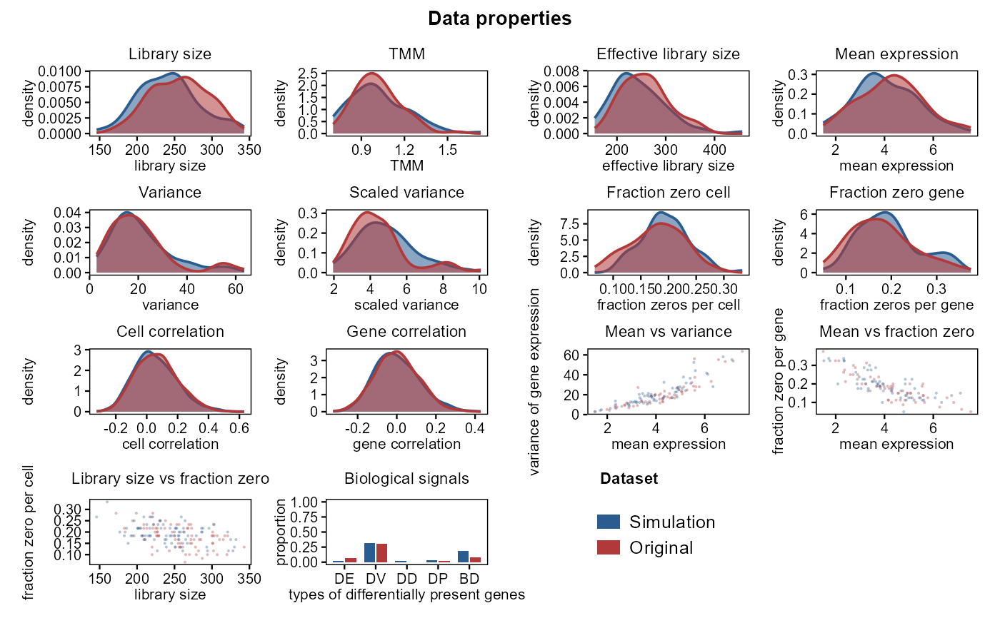

Plot Single-Cell Summary Distribution Quality (Comparative Overlays)
Source:R/10_visualizations.R
plot_distribution_qc.RdCompares empirical reference and simulated datasets across canonical single-cell summary properties: library size, TMM, effective library size, mean expression, feature variance, scaled variance, fraction zero per cell, fraction zero per gene, cell-cell correlation, gene-gene correlation, and bivariate relationships (mean vs. variance, mean vs. zero fraction, library size vs. zero fraction, and biological signals). Designed after landmark benchmarking studies (countsimQC / Duo et al.) with a clean, human-crafted scientific layout featuring solid visible contour lines, semi-transparent color-filled density curves, and simple understated titles.
Usage
plot_distribution_qc(
ref_data,
sim_data,
layout = c("comprehensive", "density"),
properties = NULL,
title = "Data properties",
ref_name = "Original",
sim_name = "Simulation",
palette = NULL,
cell_types = NULL,
base_size = 9
)Arguments
- ref_data
Numeric count matrix for empirical reference (features x cells).
- sim_data
Numeric count matrix for simulated data (features x cells), or a named list of simulated count matrices representing multiple simulators (e.g.
list("scDesign3" = m1, "Splatter" = m2)).- layout
Character. Visualization layout:
"comprehensive"(default 14-panel benchmarking grid matching canonical single-cell papers) or"density"(faceted density curves only).- properties
Optional character vector of specific properties to include if custom selection is desired.
- title
Character. Main plot title. Default
"Data properties". Set toNULLfor no title.- ref_name
Character. Label for the empirical reference in the legend. Default
"Original".- sim_name
Character. Label for the simulation if a single matrix is provided. Default
"Simulation".- palette
Optional named character vector of colors. Default uses warm red for reference and classic steel blue for simulation.
- cell_types
Optional factor or character vector of cell identities for computing biological signal proportions.
- base_size
Numeric. Base font size. Default
9.
Examples
data(example_scrna)
p <- plot_distribution_qc(example_scrna$ref, example_scrna$sim)
if (requireNamespace("ggplot2", quietly = TRUE)) print(p)
